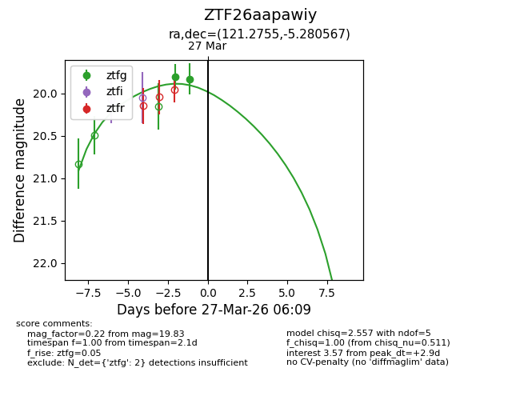
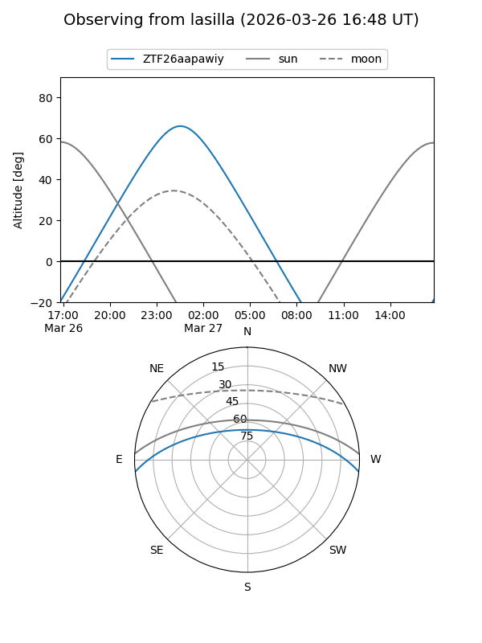
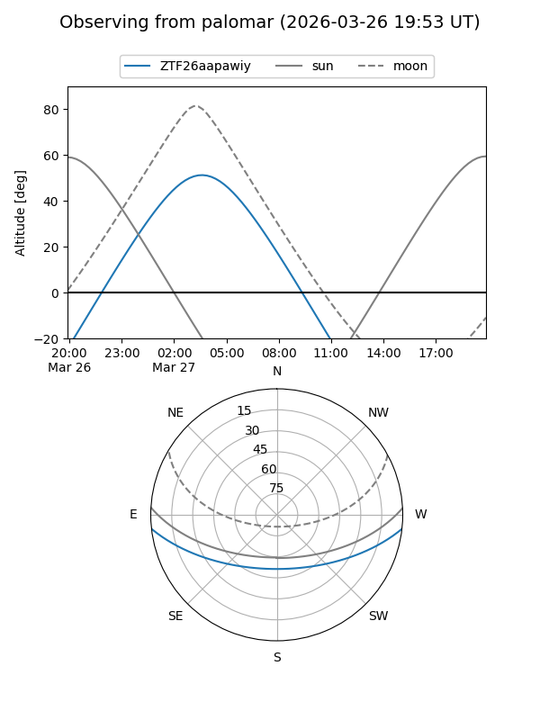

ZTF26aapawiy
Target ZTF26aapawiy at 2026-03-27 06:14
Aliases and brokers:
FINK: link
Lasair: link
ALeRCE: link
alt names
ZTF26aapawiy (ztf,fink_ztf)
Coordinates:
equatorial (ra, dec) = 121.2755,-5.28057
equatorial (HMS+DMS) = 08:05:06.12,-05:16:50.04
galactic (l, b) = (226.3477,+13.76862)
Flags:
Photometry:
last ztfg=19.83
2 ztfg detections
Lightcurve

Visibility


Additional plots